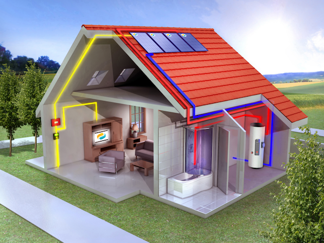

Financez votre installation de panneau solaire grace à votre propre production

- Les coûts d’investissement pour une centrale photovoltaïque ont été divisés par 6 entre 2006 et 20141. Pourquoi ne pas en profiter pour passer à l’électricité solaire ? Des prix à la baisse, une énergie propre et adaptable… découvrez les bénéfices du photovoltaïque en 4 points clés.
- Votre production vous permettra d’obtenir un revenu supplémentaire, à un prix garanti pendant 20 ans.
- À la différence des énergies fossiles, le photovoltaïque ne rejette pas de CO2 et ne participe donc pas au réchauffement climatique. Et qui plus est, grâce aux matériaux recyclables qui composent les panneaux solaires, l’impact environnemental du photovoltaïque est minime.
- Autre avantage, le photovoltaïque utilise une énergie renouvelable et inépuisable : le soleil (qui n’est heureusement pas prêt de disparaître) ! Énergie propre et énergie d’avenir, le développement du photovoltaïque est donc une bonne nouvelle pour notre planète.
- Que vous résidiez en ville ou isolé en haut des montagnes, vous pouvez sans problème installer des panneaux photovoltaïques sur votre toiture. Résistants aux intempéries, les modules ont une durée de vie de vingt-cinq ans au minimum2.
- L’installation de panneaux photovoltaïques, vous permet de produire localement une électricité durable. Vous pouvez alors choisir de revendre la totalité de votre énergie ou opter pour l’autoconsommation et revendre le surplus de votre production. Dans les deux cas, votre production vous permettra d’obtenir un revenu supplémentaire, à un prix garanti pendant 20 ans.